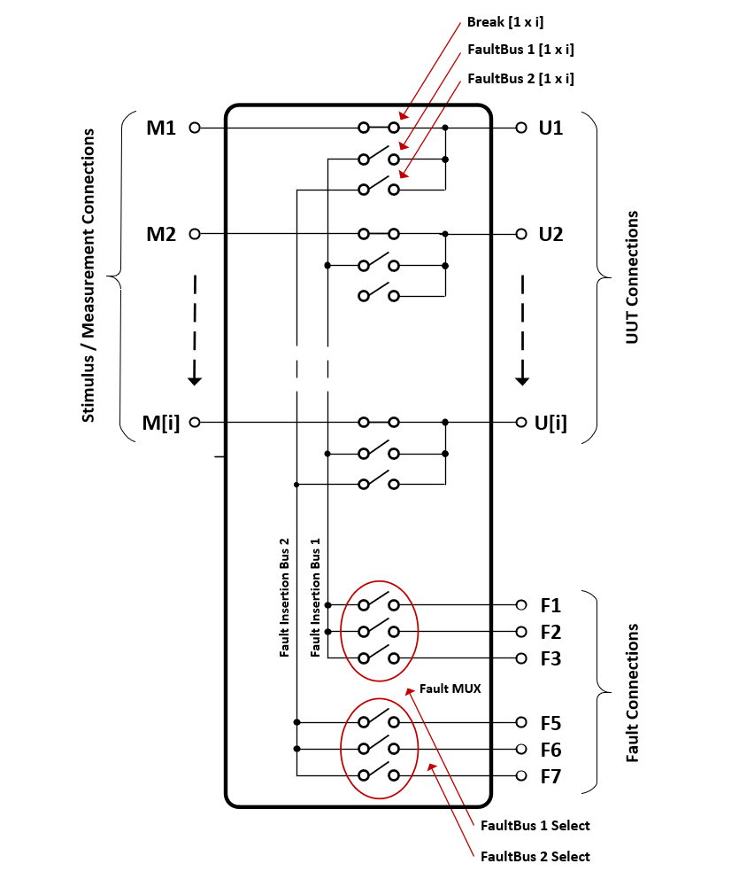
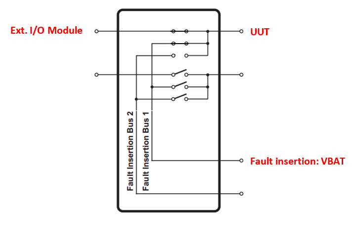

IO98X Usage Notes — Usage information about the I/O module

Break relays directly connect Mn and Un I/O pins. The Break input port accepts a vector to control each break relay of the module. Faults can be inserted using the FaultBus switches provided. The switches are controlled over the FaultBus and FaultBus Select ports.
Fault insertion buses allow any channel to be shorted to any other channel and also enable any channel to be connected to an external signal. Be careful connecting an I/O module to a fault insertion card. External signals may damage an I/O module when short-circuited, as shown in this example. Refer to I/O module specification for maximum ratings.
